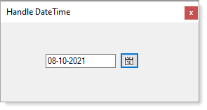
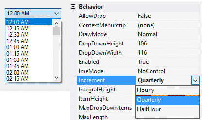

To allow a calendar to be displayed where the Text input is disabled other than copying we use a child form to display a month calendar to allow a date to be selected. If time is needed this can be done too but is not included. See options in my Working with time repository for a time ComboBox.
Decided to place the TimeComboBox under Classes folder and shown in Form2.
:heavy_check_mark: Written with .NET Framework 4.8 (will work in .NET Core 5), C#.
In the screenshot below the child form is positioned next to the button which called this form.

TimeComboBox
